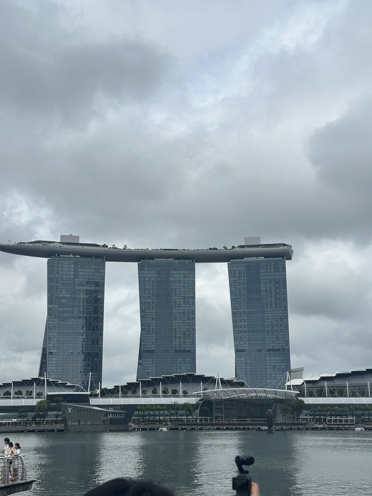

認識你的領隊 YoYo
出發前先認識我，旅途中你就會更安心。
有些事，不會寫在行程裡，但我會先幫你整理好。
新馬好玩的地方，在於你會很快感覺到兩個國家的差異。新加坡像一座節奏精準的城市，馬來西亞則有更多文化、夜市、街區和長車程的旅行感。
出發前先知道規矩，旅途中就能把注意力留給風景、拍照和吃東西。


出發前重點
新馬是兩個國家，最容易搞混的是貨幣、通關和集合節奏。
馬來西亞夜市、小店、洗手間零錢和部分自由活動比較常用現金；若行程中需要換馬幣，YoYo 會再提醒大家適合的時間點。
護照效期、簽證與入境規定會變動，出發前 YoYo 會再依官方與旅行社資訊確認。
付錢前先看幣別，不要在排隊時慌慌張張拿錯鈔票。
新馬或馬新跨境時，行李是否需要下車、人在何處集合、通關後在哪裡等車，都會依照當天安排提醒大家。先不要自己衝，跟著 YoYo 的口令走最穩。
新馬通關提醒（馬新也適用）
不管是新進馬出，還是馬進新出，團員先抓這幾個原則就好。哪一段拿行李、哪一段集合，YoYo 會依當天路線提醒大家。
護照拿好、不要拍照錄影、不要自己脫隊。新加坡與馬來西亞規定不同，請不要用上一段通關經驗去猜下一段。
聽到「只帶護照和貴重物品」就不要多拿；聽到「全部行李下車」就把大行李一起帶下去。
一般口香糖在新加坡也屬管制品，建議不要帶。這類規定會更新，請以官方資訊、旅行社行前通知與現場海關判定為準。
通關、轉場、上車前後，YoYo 如果提醒先去廁所，請把握時間。新馬移動時有些下一站不會那麼快到，先準備好會比較舒服。
新加坡重點景點
這裡先放新加坡常見亮點，實際會走哪些點，以行程說明會公告的行程為主。
每團安排會不太一樣。這頁先讓大家知道常見亮點長什麼樣子、好拍在哪裡；真的走到現場，YoYo 會再提醒集合時間和拍照動線。



新加坡很多地方乾淨、秩序清楚，但也代表規定比較明確。遊覽車、商場、景點、通關區都有各自規範；不確定能不能做的事，先問最穩。
馬來西亞重點景點
馬來西亞的亮點不是只有城市，也有貿易港、文化和老建築的層次；實際景點仍以行程說明會公告為主。
馬來西亞路線變化比較多，有些團走吉隆坡，有些團重點在馬六甲或其他城市。這裡先放常見亮點，真正會去哪些地方，請以行程說明會公布的地點為主。
馬來西亞景點之間常有車程，早上不要把自己弄得太累；水、薄外套、簡單零食和常備藥可以放在隨身包裡。
美食特色
每國先記幾個代表味道，實際吃什麼仍看行程、自由活動時間與個人口味。
人多時包包和手機要顧好；腸胃敏感的人，冰飲、生食、太刺激的醬料可以保守一點。
建議以瓶裝水為主。自由活動時如果要買冰飲、生食或路邊攤，請依自己的腸胃狀況判斷，不要第一天就挑戰太刺激。
購物與回台前提醒
伴手禮不用多，買到好帶、好分、好保存最重要；回台前也要先整理好行李和禁帶物。
肉類、新鮮水果、植物類商品要特別小心。榴槤零食可依包裝判斷，新鮮榴槤不要帶回台灣；不確定就先問 YoYo。
- 護照、手機、錢包、房卡、充電器、保險箱先檢查。
- 行動電源放手提，不要放托運行李。
- 液體、免稅品、易碎品分開整理。
- 食品、菸酒、藥品與需申報物品不確定就先問。
- 抵達桃園後，確認行李件數與外觀再離開。
YoYo 提醒你
新馬都好玩，但規矩和文化節奏不一樣。
新馬常見問題
出發前先看一遍，旅途中會少很多慌張。
新馬通關時，馬新也適用嗎？
適用。新進馬出或馬進新出，都不用自己判斷要不要拿大行李。陸地通關每一段規定和現場狀況不同，請直接聽 YoYo 口令，該拿大行李時會提醒。
新馬要換幾種錢？
兩種。新加坡用新幣 SGD，馬來西亞用馬幣 MYR。建議分開放，避免付款時拿錯。
新加坡可以刷卡嗎？
大多商場、餐廳和店家刷卡方便，但熟食中心或小攤仍可能需要現金或指定電子支付。團員版建議還是留一點現金。
馬來西亞需要現金嗎？
需要。夜市、小店、部分自由活動或洗手間零錢都可能用得到馬幣現金；若現場需要換馬幣，可依當團安排詢問導遊。
兩國插座一樣嗎？
新加坡和馬來西亞常見英規 G 型插座，建議帶萬用轉接頭。歐規兩孔圓形可以備用，但不要硬插，不確定就找 YoYo 或領隊示範。
新馬會很熱嗎？
會，且常有短暫陣雨。建議帶好走鞋、薄外套、防曬、雨具和可以快速補水的小水壺。
夜市或自由活動要注意什麼？
先記集合時間和地點，再開始逛。人多的地方手機、包包和錢包要顧好；腸胃敏感的人，冰飲和路邊食物可以保守一點。
可以帶榴槤回台嗎？
新鮮榴槤不要帶回台灣。榴槤零食也要看包裝與成分，不確定就先問 YoYo 或以海關、防檢規定為準。
入境、通關、票價、營業時間與行程安排仍以官方資訊與旅行社行前通知為準。